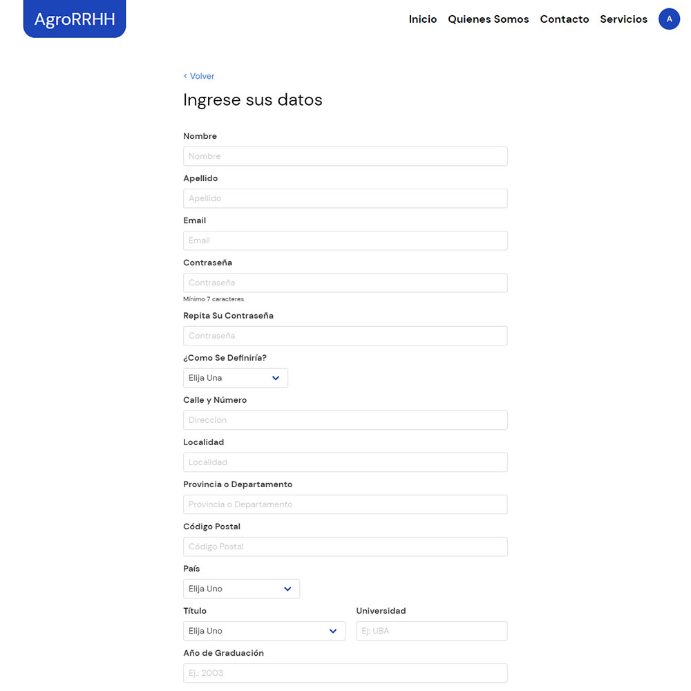
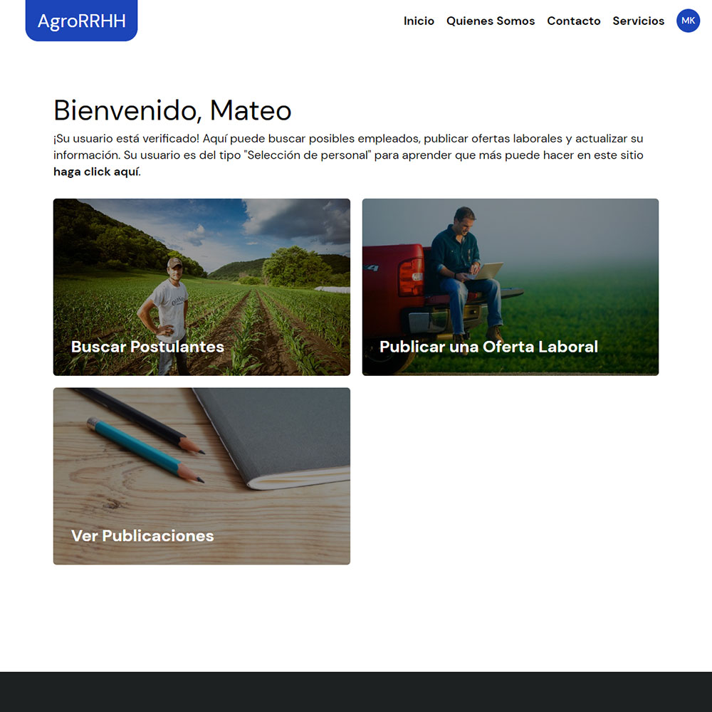
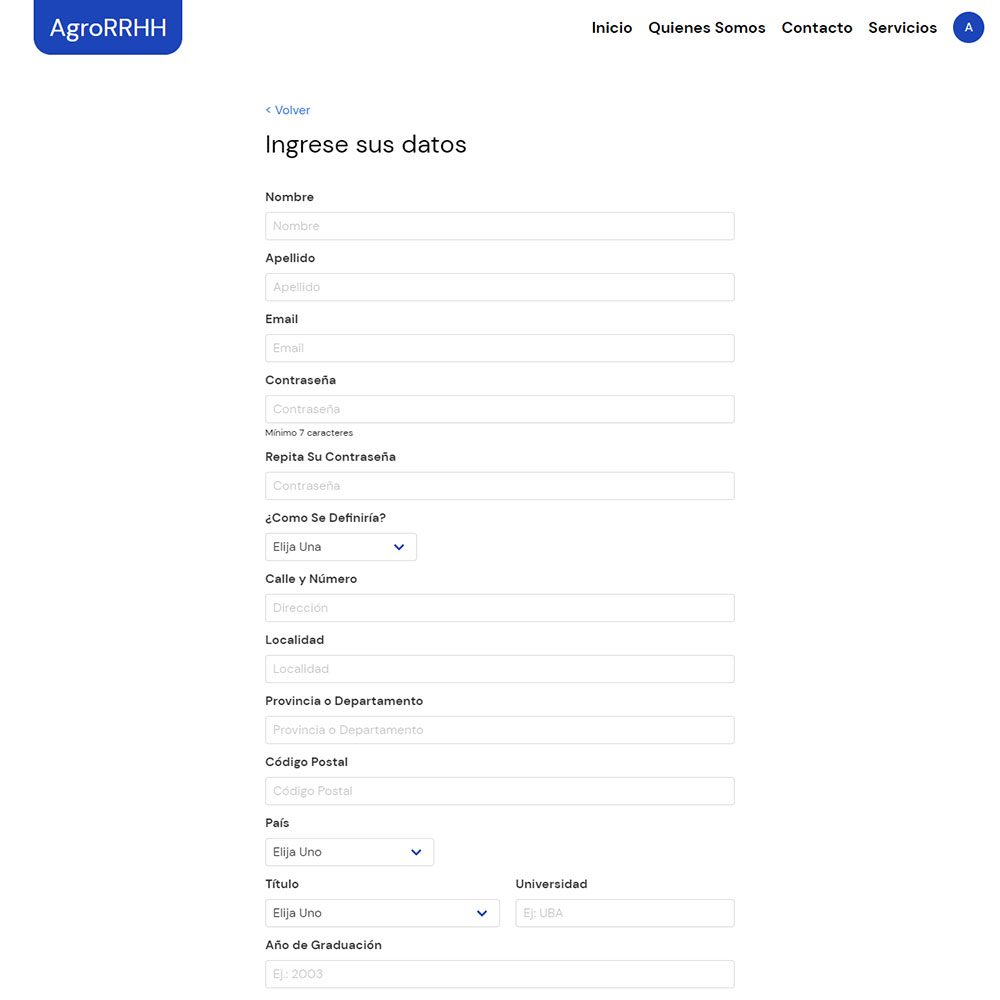
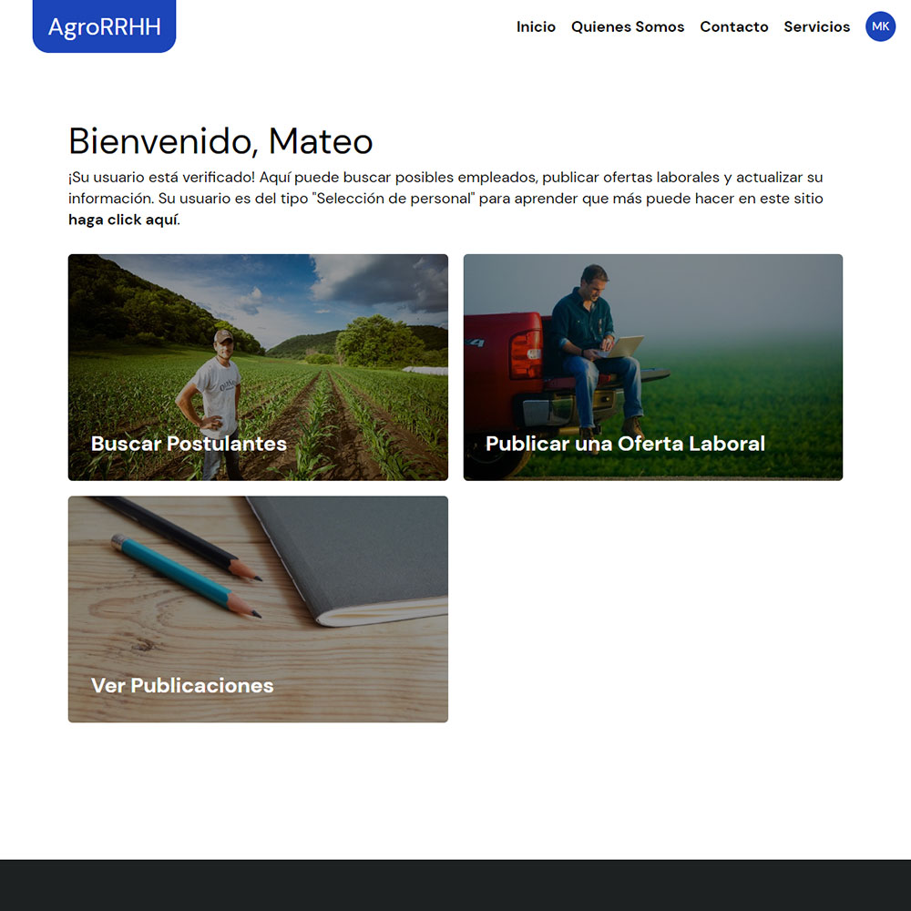

Desarollo
keyboard_arrow_leftBack
AgroRRHH
This was my most ambitious project. The site is a job board for the agricultural sector. Its a platform with two types of users, different types of paid subscriptions, and an administrator panel. To develop it I learned how to use PHP, a back-end technology, to connect the front-end of the site with a MySQL database. HTML, CSS, JS, JQuery, PHP, and MySQL were used in its development.
 





AsesorRural
On this platform, registered users can post promotions for their digital courses and some specific users can post videos too. It includes an administrator panel that allows the verification of users among other functionalities. For development, I used HTML, CSS, JS, JQuery, PHP, and MySQL. The site is not in use yet.